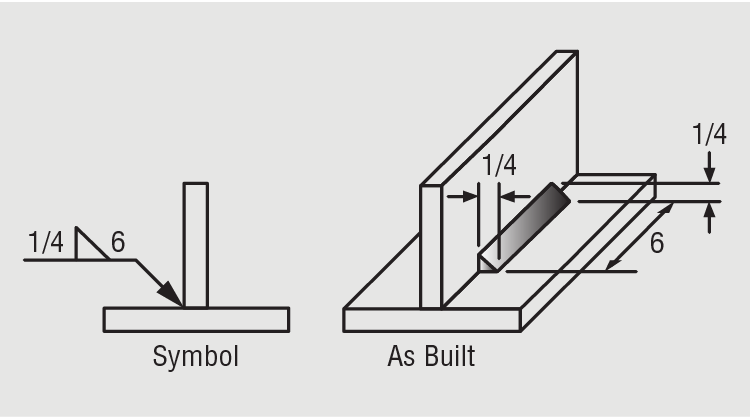
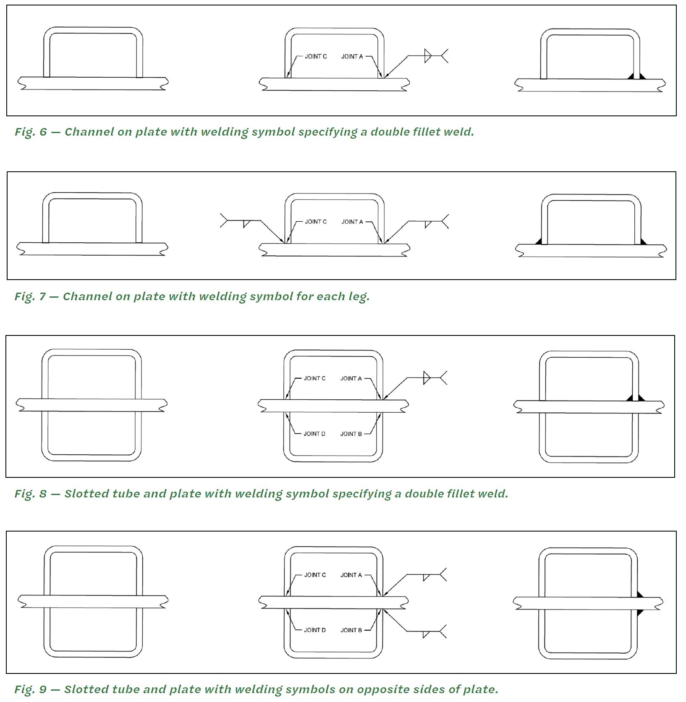
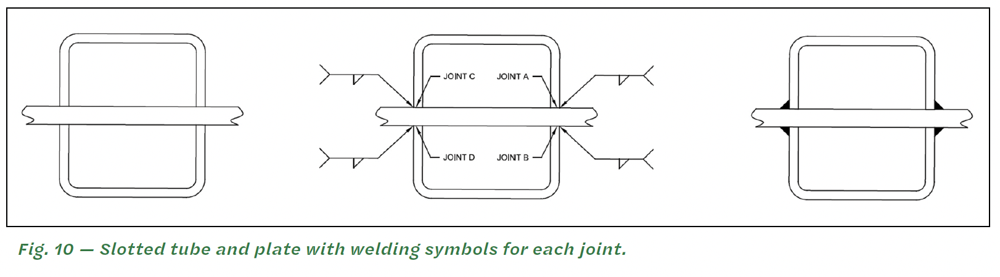
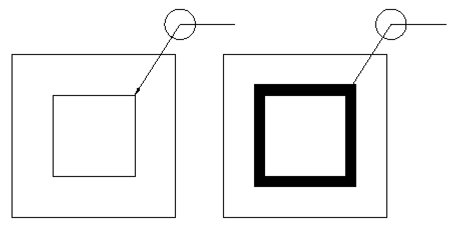
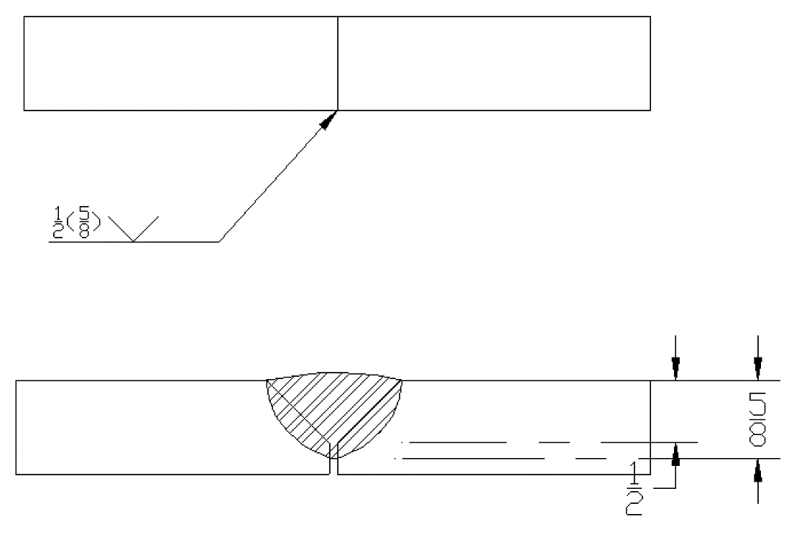
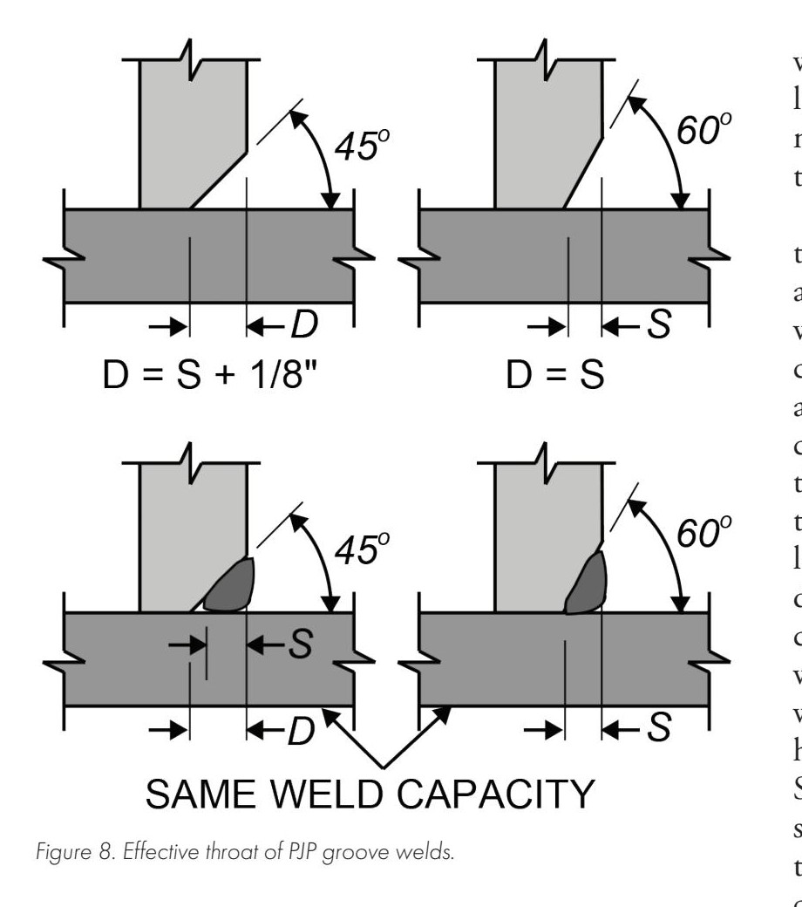
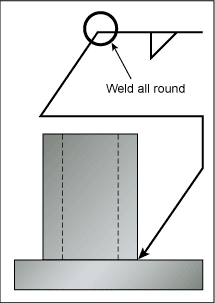
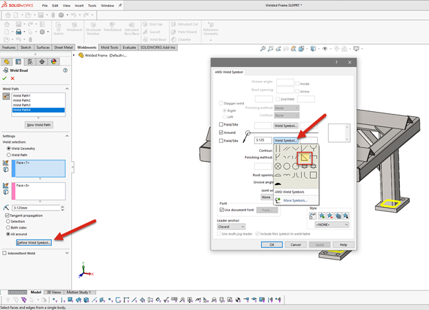

Anatomy of a welding symbol

- Reference line carries everything; the arrow joins it to the joint
- Arrow side: symbol below the line. Other side: above. Holds whichever way the arrow points
- Arrow and other side are relative to the joint, not the viewer
- Field weld: flag at the junction (no flag = shop) · All around: open circle · Tail: process, notes

CPME USA · Engineering Harness · CAD Weld Guidance
Size left, length right, and no default size



MISTAKE"A fillet doesn't need a size"
Unlike an unsized V-groove (read as CJP), a blank fillet has no default. Full-thickness fillets are discouraged.PRACTICEGeneral note plus TYP
A general note may set the typical size, but keep a TYP symbol at a representative joint, close to the work.CPME USA · Engineering Harness · CAD Weld Guidance
The general note, and intermittent fillets


Intermittent (stitch) fillets: length-pitch right of the symbol; pitch is centre to centre, not the gap. Plug and slot: hole size left, pitch right, count in parentheses.
CPME USA · Engineering Harness · CAD Weld Guidance
One symbol per joint, and per tube wall


- A symbol applies only to the joint its arrow touches; a double fillet means both sides of that one joint
- Fillets on all four walls of a square tube need four single-fillet symbols, or a correctly used all-around
CPME USA · Engineering Harness · CAD Weld Guidance
When the all-around circle is right, and when not


MISUSEAcross 3-D corners
Thin throat at transitions, hidden poor fit-up. Example: square tubes with flush members, where the flush sides are flare-bevel grooves.NOTESanitary washdown seal welds
Recognised for washdown. When used, say so on the symbol or note and name the inspection (MT or PT).CPME USA · Engineering Harness · CAD Weld Guidance
Matched vs stepped tube joints

CHEAPERStepped
Branch narrower than the chord: plain fillets.MORE WORKMatched (flush)
Fillets plus flare-bevel grooves. Root opening 0 nominal, 1/16 in. detailed tolerance, 1/8 in. at fit-up.- Strength rests on the effective throat; one pass covers fillets to about 5/16 in.
- Tube-end welds are outside-only (single-sided)
- CJP needs backing that can't come out of a closed tube: use rarely
CPME USA · Engineering Harness · CAD Weld Guidance
Flare-bevel and flare-V: throat in parentheses


- Flare welds are always PJP; a size without parentheses is groove depth
- Corner radius sets the throat: 2.25t stepped, average 2t matched (AISC)
RISKNo size given
The shop fills flush (many passes). A blank symbol on an HSS connection is read as CJP.CPME USA · Engineering Harness · CAD Weld Guidance
The groove family: depth vs effective throat



V-groove: angle and root opening; partial depth left, throat in parentheses. Bevel and J: the arrow points at the prepared piece. R in a backing symbol = remove after welding.
CPME USA · Engineering Harness · CAD Weld Guidance
AWS vs ISO: never mix them on one drawing


| Item | AWS A2.4 (ours) | ISO 2553 |
|---|---|---|
| Other side | Symbol above the line | Dashed second line |
| Fillet size | Leg size, left of symbol | z leg, a throat |
| Unsized groove | Read as CJP | Full penetration |
| Process | In the tail | ISO 4063 number |
OURS IS AWSDon't copy ISO figures
No dashed line, no a/z prefixes on CPME drawings.CPME USA · Engineering Harness · CAD Weld Guidance
Cosmetic bead vs solid bead
| Cosmetic (graphical) weld | Solid weld bead | |
|---|---|---|
| Geometry | None: edges change appearance | Real body in the weldment |
| Data | Properties feed a weld table | Shows in the cut list |
| Mass | Approximate | True |
| Interference | Not seen by checks | Seen (bead vs hole, clamp, part) |
| Vendor advice | DEFAULTfor detailed weldment drawings | Where mass or the physical weld matters |


CPME USA · Engineering Harness · CAD Weld Guidance
Symbols tied to the model, not typed on the sheet



- A model weld symbol's leader is attached to a model edge and follows it
- Drawings pull model symbols in and stay associative; hand-added notes do not
ASME Y14.41-2019
Annotated model, or model plus drawing. Weld symbols still come from AWS A2.4.CPME USA · Engineering Harness · CAD Weld Guidance